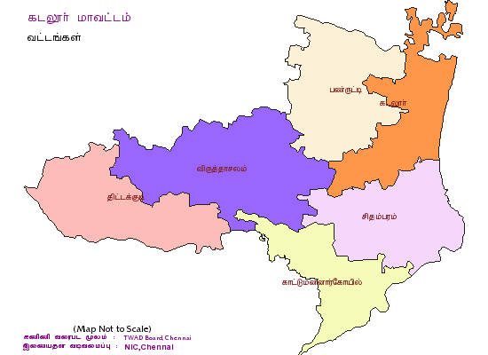

This is Erode District in tamilnadu

Cuddalore district of Tamil Nadu is spread over 3,678 Sq. km of Tamil Nadu. As per 2001 census, the district has the population of 22,85,395, comprising of 11,50,908 male and 11,34,487 female population.
Popular places in cuddalore
- Pichavaram
- Vadalur
- Srimushnam
- Srimushnam
home